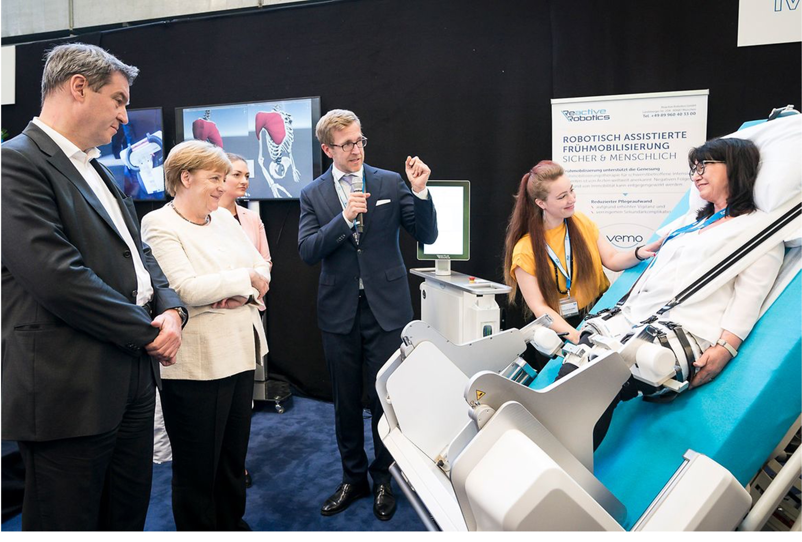

Where do
we start?
With the task, not the robot. Find the process where automation already works today, then begin small and measurable.
Which use case first, which technology, which partner: I help boards and strategy teams understand what robotics can do today, and I support the first steps.

Personal references available on request.
With the task, not the robot. Find the process where automation already works today, then begin small and measurable.
Humanoid, cobot or mobile platform, in-house development or partner: I show what is technically mature, what will arrive within three years and what will remain a demo.
Which capabilities belong in-house, what can be bought, and how to involve startups, universities and suppliers in a way that pays off.
Humanoid robots and embodied AI: what they can do today, where their limits are and when they become commercially relevant.
Getting started in robotics: how large companies found their way in, which use cases pay off first and what can be transferred.
Cybersecurity for machines that act: attacks, data leakage, hardware origin, remote control and liability. What management needs to know.
What eight years as founder and CEO of a robotics company teach about technology, regulation, funding and scale.
For boards, executives and strategy teams who have to decide whether, where and with whom to move into robotics.
Half a day or a full day with your leadership team: state of the technology, competition, opportunities and risks for your business. The result is a shared picture you can base decisions on.
We assess your processes for technical maturity and economic benefit, select the first use cases and define what you build yourself and what you solve with partners.
A real task from your company, several teams, a clear incentive. You see from results rather than demos which technology works in your environment.
An independent assessment of robotics and AI companies before an investment: technology, team, intellectual property, regulatory path and scalability.
Regular exchange as an advisor or board member when decisions are pending and a second, independent view is needed.
The technology is the same, the questions are not. Four fields in which the question of where to start comes up most often.
Picking, palletising, transport in the warehouse: which tasks can be automated today and where people remain faster.
From the fixed cell to flexible automation: cobots, mobile manipulation and what humanoid systems change on the shop floor.
Robots are leaving the factory. What that means for appliance makers, service providers and new business models.
Assistive robotics that relieves professionals and preserves independence, in a setting with high demands on safety and approval.
A connected robot is a computer that moves. Four points that belong on the management agenda, not only in IT.
Professor of Robotics and Systems Intelligence at the Technical University of Munich. Previously founder and CEO of Reactive Robotics GmbH for eight years. Mentor and coach at Techstars and Siemens Next47.
View profile ›
Keynotes, management workshops and advisory projects, available worldwide, with a focus on Germany and Europe.
Keynote, workshop or advisory: a short message is enough.
Enquire about a keynote Enquire about advisory